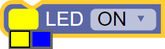
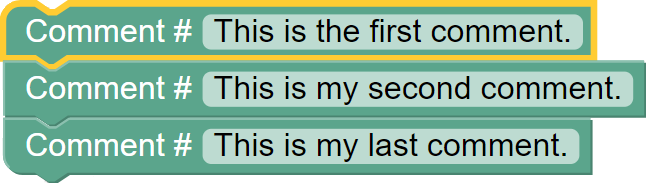

Intermediate Fusion Control
The Intermediate Fusion Control toolbox comes with the necessary Start, LED and End blocks.
Fusion Driver Python Library Information
List of available blocks:
Start Block
Initializes the Fusion Robot at the start of every program. This block must be used in every Blockly program. By default the Start block is included in the programming environment.
Block:
Code Produced:
import Fusion f = Fusion.driver()
LED
Control the on-board Yellow and Blue LEDs. The LEDs can be either ON or OFF.
Block:

Code Produced:
f.setLED(f.YELLOW, 1)
Comment
Inserts inline comments into the program. This helps to label sections making it easier to find blocks of code.
- In Python a comment is made starting with
#.- Accepts ASCII characters.
Block:
Code Produced:
#Example:

# This is the first comment. # This is my second comment. # This is my last comment.
End Program
Stop the current program running.
Block:
Code Produced:
exit()
Questions?
Contact Boxlight Robotics at support@BoxlightRobotics.com with a detailed description of the steps you have taken and observations you have made.
Email Subject: Intermediate Fusion Control